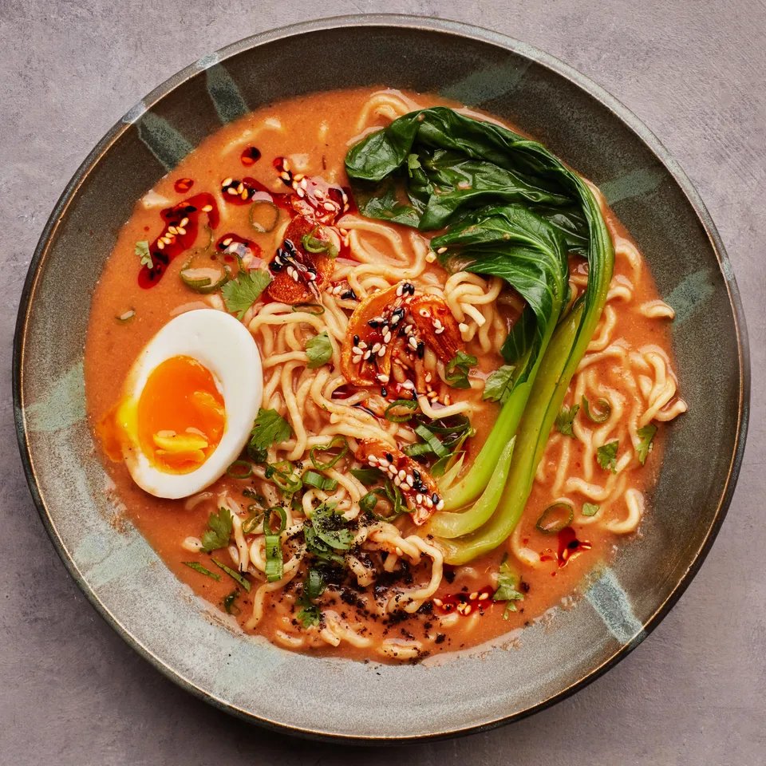

Vegetarian Ramen

The goal here was to achieve a tonkotsu-like broth without using any meat. Tomato paste, dried shiitake mushrooms, kombu, and a little bit of butter help to get you that rich umami-like effect.
Ingredients
- 4 garlic cloves, thinly sliced
- ¼ cup plus 2 Tbsp. vegetable oil
- 1 Tbsp. black or white sesame seeds
- 1 Tbsp. gochugaru (coarse Korean red pepper powder) or 1½ tsp. crushed red pepper flakes
- Kosher salt
- 4 scallions
- 1 2" piece ginger, peeled, thinly sliced
- 2 Tbsp. tomato paste
- 8 dried shiitake mushrooms
- 1 4x3" piece dried kombu
- 3 Tbsp. unsalted butter, cut into pieces
- 1 Tbsp. low-sodium soy sauce
- 4 baby bok choy (about 12oz. total)
- 4 5-oz. packages fresh ramen noodles
- Jammy eggs, toasted nori sheets, and/or cilantro (for serving; optional)
Steps
- Cook garlic and ¼ cup oil in a medium pot over medium heat, stirring often, until garlic is beginning to turn golden, about 3 minutes. Stir in sesame seeds and cook, stirring occasionally, until garlic is golden brown and crisp, about 1 minute. Transfer mixture to a small bowl and stir in gochugaru; season with salt. Set garlic oil aside. Wipe out pot and set aside.
- Trim dark green parts from scallions and thinly slice; set aside for serving. Coarsely chop white and pale green parts. Heat remaining 2 Tbsp oil in reserved pot over medium-high. Cook chopped scallions and ginger, stirring often, until scallions are charred in spots, about 4 minutes. Add tomato paste and cook, stirring occasionally, until it begins to stick to the bottom of pot and darkens slightly, about 2 minutes. Add mushrooms and kombu, then stir in 5 cups cold water. Bring to a boil, then remove from heat and let sit until mushrooms soften, about 10 minutes. Remove and discard kombu.
- Using a slotted spoon, transfer solids to a blender. Add a ladleful or 2 of broth to blender and purée until smooth. Stir purée back into broth in pot and bring to a simmer over medium heat. Add butter a piece at a time, whisking to combine after each addition before adding more. Stir in soy sauce; season with salt. Reduce heat to low and keep warm until ready to serve.
- Meanwhile, bring a large pot of water to a boil. Add bok choy and cook until bright green and tender, about 2 minutes. Using a slotted spoon, transfer bok choy to a plate. Return water to a boil and cook noodles according to package directions. Drain and divide among bowls.
- To serve, ladle broth over noodles, then top with bok choy and reserved garlic oil. Top with eggs, nori, and cilantro if desired.